Discography
South Korean girl group Blackpink have released two studio albums, three extended plays, four single albums, one compilation album, and four live albums in total.
Blackpink released their debut single album Square One in August 2016, which includes the songs "Whistle" and Boombayah". "Whistle" debuted atop the Gaon Digital Chart while "Boombayah" became the group's first number-one hit on the Billboard World Digital Song Sales chart. The group continued their success with the release of Square Two on November 1, 2016. The single album includes "Playing with Fire", which sold more than 2.5 million digital copies in South Korea and became Blackpink's second number-one hit on the Billboard World Digital Song Sales chart. Square Two peaked at number 13 on the Billboard Top Heatseekers chart and number two on the World Albums chart.
In June 2017, the group released their fifth single, "As If It's Your Last", which became the group's third song to reach 2,500,000 certified downloads in South Korea (after "Whistle" and "Playing with Fire") and their third number-one hit on the Billboard World Digital Song Sales chart (after "Boombayah" and "Playing with Fire"). In August of the same year, Blackpink made their Japanese debut with their EP Blackpink, which featured Japanese-language editions of the group's existing tracks at the time. The EP was a commercial success, debuting atop the Oricon chart and selling over 80,000 copies in Japan.
In June 2018, the group released their first Korean EP, Square Up, which debuted atop the Gaon Album Chart. Square Up peaked at number 40 on the Billboard 200, and spawned the hit single "Ddu-Du Ddu-Du", which spent three weeks atop the Gaon Digital Chart. "Ddu-Du Ddu-Du" was also the group's first song to enter the Billboard Hot 100, debuting and peaking at number 55, and their fourth on the World Digital Song Sales chart. As of April 2019, the single has achieved a platinum certification for both streaming and downloads within South Korea. In October 2018, the group collaborated with British singer Dua Lipa for the track "Kiss and Make Up", achieving commercial success worldwide. In December 2018, the group released their first Japanese studio album, Blackpink in Your Area, which included all tracks from their previous Japanese self-titled extended play as well as Japanese versions of the four tracks on Square Up.
The group's second Korean EP Kill This Love was released digitally on April 5, 2019. A physical version of the album was released later on April 23, 2019. The EP has received positive reviews and has been a commercial success. Kill This Love sold over 350,000 copies in China in the first week alone, and around 250,000 physical copies in South Korea within the first eight days. Kill This Love peaked at number 24 on the Billboard 200, making them the highest-charting female Korean act on the chart. The EP's lead single, "Kill This Love," peaked at number 41 on the Billboard Hot 100, marking the group's third hit to enter the chart and extending their record for the most entries and longest-charting single of a female Korean act on the chart. It also became the group's fifth single to chart at number one on Billboard's World Digital Song Sales chart.
In June 2020, Blackpink released "How You Like That" as a pre-release single from the group's debut Korean studio album The Album. The song spent three weeks atop the Gaon Digital Chart and debuted at number 33 on the Billboard Hot 100, tying with the group's collaboration with American singer Lady Gaga, "Sour Candy", as the highest-charting songs by a female act on the Hot 100. The group subsequently released the second pre-release single “Ice Cream" featuring American singer Selena Gomez on August 28, which peaked at number 13 on the Billboard Hot 100, becoming the highest-charting as well as the longest-charting song by a female Korean act on the chart. On October 2, 2020, The Album was released alongside title track “Lovesick Girls", which peaked at number two on both the Billboard Global 200 and the Gaon Digital Chart. The album debuted at number one on the Gaon Digital Chart and broke the record for the best-selling album by a Korean female act of all time, selling over 1 million copies in its first month. It also debuted at number two on the Billboard 200, becoming the highest-charting album by a female Korean act and the highest-charting album by a girl group since 2008 on the chart.
-
Studio Albums
-
The Album
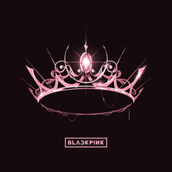The Album is the debut studio album by the South Korean girl group Blackpink, released on October 2, 2020 by YG Entertainment and Interscope Records. It is the group's first full-length work since their debut in 2016. For the album, Blackpink recorded over ten new songs and worked with a variety of producers, including Teddy, Tommy Brown, R. Tee, Steven Franks, and 24. Eight songs made the final tracklist, including two collaborations: "Ice Cream" with Selena Gomez, and "Bet You Wanna", featuring Cardi B. The album explores the themes of love and the complexities of growing up. Musically, The Album utilizes pop, R&B, hip hop, EDM, and trap elements.
-
Born Pink

Born Pink is the second studio album by South Korean girl group Blackpink, released on September 16, 2022, through YG Entertainment and Interscope Records. It marks the group's first full-length work since the release of The Album in 2020. Described as a pop album, it was met with generally favorable reviews from critics.
-
-
Compilation Albums
-
Blackpink in Your Area
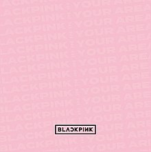Blackpink in Your Area is the first Japanese compilation album, and first double album by South Korean girl group Blackpink. The album was released through YGEX on November 23, 2018, followed by physical release in Japan on December 5.
-
-
Live Albums
-
Blackpink Arena Tour 2018 "Special Final in Kyocera Dome Osaka"
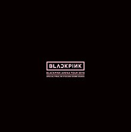Blackpink Arena Tour 2018 was the first concert tour by South Korean girl group Blackpink. The tour was held in Japan, from July 24 to December 24, 2018, to promote their first Japanese extended play.
-
Blackpink 2018 Tour 'In Your Area' Seoul
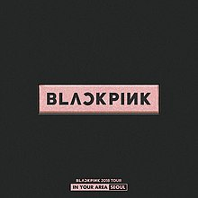The In Your Area World Tour (also known as Blackpink World Tour [In Your Area]) was the first worldwide concert tour and the second overall by South Korean girl group Blackpink. The tour began on November 10, 2018, in Seoul, South Korea and ended on February 22, 2020, in Fukuoka, Japan, in support of their albums Square Up (2018) and Kill This Love (2019). It visited a total of 17 countries and 26 cities around the world. The tour is the highest-grossing tour by a Korean girl group.
-
Blackpink 2019–2020 World Tour in Your Area – Tokyo Dome
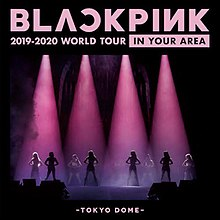Blackpink 2019–2020 World Tour in Your Area – Tokyo Dome is the third live album of the South Korean music group Blackpink, released on May 14, 2020.
-
The Show
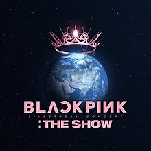The Show, officially titled YG Palm Stage ― 2021 Blackpink: The Show, was the first online concert by South Korean girl group Blackpink to promote their first Korean studio album The Album.
-
-
EPs
-
Square Up
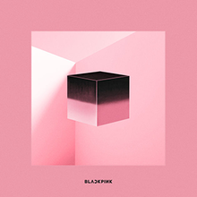Square Up is the first Korean extended play (second overall) by South Korean girl group Blackpink, released on June 15, 2018 by YG Entertainment. It is available in two versions and contains four tracks, with "Ddu-Du Ddu-Du" released as the lead single. Upon its release, Square Up debuted at the top spot of the Gaon Albums Chart and went on to sell almost 179,000 copies on its first fifteen days of release in South Korea. The EP also debuted at number 40 on the US Billboard 200, becoming Blackpink's highest selling album in a Western market as well as the highest-charting album by a female K-pop group at the time. In March 2019, it was certified Platinum by the Korea Music Content Association (KMCA) for selling 250,000 units.
-
Kill This Love
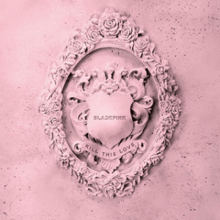Kill This Love is the second Korean-language extended play (third overall) by South Korean girl group Blackpink, released on April 5, 2019, by YG Entertainment and distributed through YG Plus and Interscope Records. It is their first Korean material since the release of Square Up in June 2018, and their debut release with Interscope Records. The title track was released as the lead single. The single peaked at number two in South Korea and became the group's first top-50 hit in the United States and the United Kingdom. The song "Don't Know What To Do" was later promoted in Korean music programs as the EP's sub-title track.
-
Blackpink(EP)
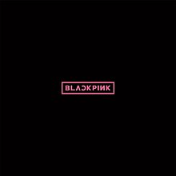Blackpink is the first Japanese extended play by South Korean girl group Blackpink. The EP was released in Japan through YGEX on August 30, 2017, following digital pre-release on August 29. The six track EP consists of Japanese version of their previously released singles in Korean.
-
-
Single Albums
-
Square One
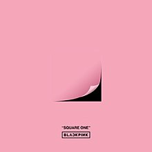Square One is the debut single album by South Korean girl group Blackpink. It was released digitally on August 8, 2016, by YG Entertainment. The lyrics were written by B.I, Teddy Park, Bekuh Boom while the music was composed by Teddy Park, Future Bounce and Bekuh Boom.
-
Square Two
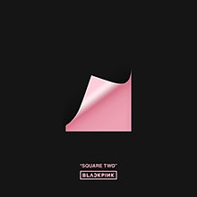Square Two is the second single album by South Korean girl group Blackpink. It was released as a digital single on November 1, 2016, by YG Entertainment and distributed by KT Music. The single has a double A-side, "Playing with Fire" and "Stay" as well as an acoustic version of "Whistle". The lyrics were written by Teddy Park and the music was composed by Teddy Park, R.Tee and Seo Won-jin.
-
How You Like That
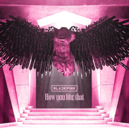"How You Like That" is a song recorded in Korean and Japanese by South Korean girl group Blackpink. It was released on June 26, 2020, through YG Entertainment, YG Plus and Interscope Records, as the pre-release single from the group's first Korean-language studio album, The Album (2020). An EDM, hip hop, trap, club and pop song, it was co-written by Danny Chung, R. Tee, 24, and Teddy Park, while the latter produced the song.
-
Ddu-Du Ddu-Du
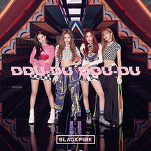"Ddu-Du Ddu-Du" (Korean: 뚜두뚜두; RR: ttuduttudu) is a song recorded in Korean and Japanese by South Korean girl group Blackpink. It was released on June 15, 2018, through YG Entertainment, in conjunction with the release of the group's first Korean-language extended play, Square Up. The Japanese version of the single was released through YGEX on August 22, 2018, and was distributed in three physical formats. Described as a pop rap song infused with trap beats and bubblegum pop sounds, the track was written by YG collaborator Teddy Park, whilst production and composition were handled by Park, 24, Bekuh Boom and R.Tee.
-
DVD & Blu-Ray
Blackpink Arena Tour 2018 "Special Final In Kyocera Dome Osaka" |
Blackpink 2018 Tour 'In Your Area' Seoul |
Blackpink 2019-2020 World Tour In Your Area - Tokyo Dome |
Blackpink 2021 'The Show' Live |
Films & Series
| 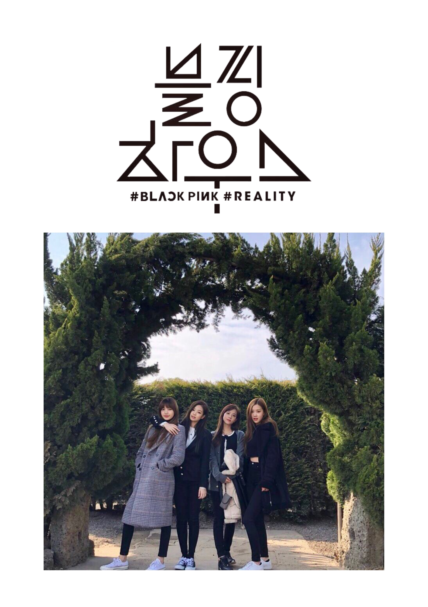 | 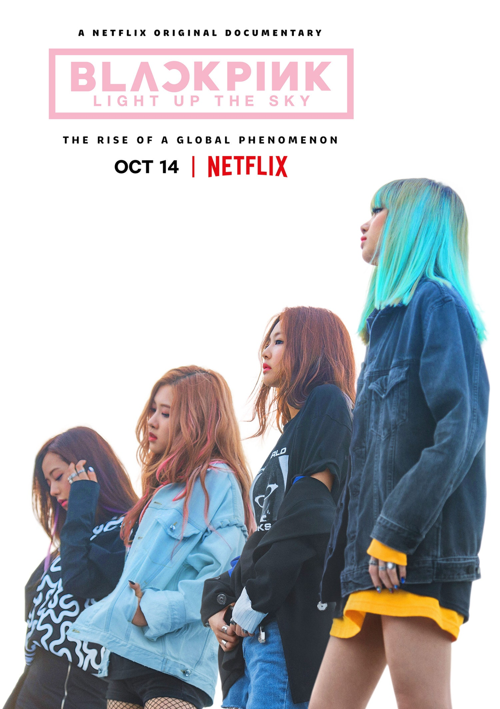 | 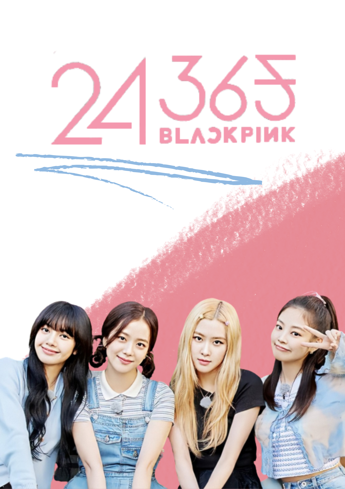 |
BLACKPINK House |
BLACKPINK Light Up The Sky |
BLACKPINK 24/365 |